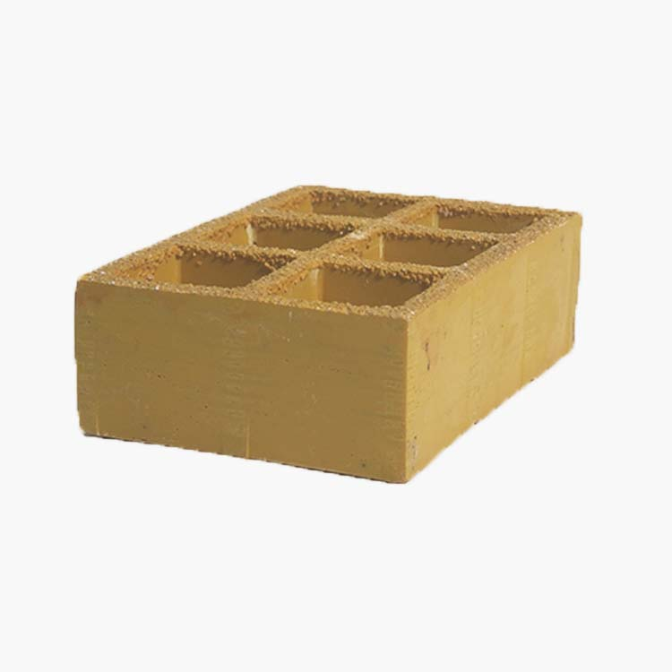

Steel Grating vs FRP Grating
Both materials make legitimate industrial floors. The wrong choice is usually a category error—specifying steel where chemistry eats zinc, or FRP where wheel loads and deflection caps belong to a heavy steel mesh without checking pultruded alternatives.

Introduction
This comparison assumes you already know the span and load cases from the structural discipline. If those inputs are missing, start with how to choose steel grating and load capacity explained; material choice comes after the panel can carry the duty.
What “steel grating” means in procurement
Welded bar grating is forged at each crossing; press-locked variants mechanically interlock bars for flush faces. Finishes range from hot-dip galvanized carbon steel to serrated tops for wet service and stainless grades for chloride exposure. Steel fails predictably in bending and shear; catalogs publish capacities tied to test methods—your job is to match the correct table row to your span.
What FRP grating adds to the design space
Molded FRP uses continuous glass reinforcement in a thermoset resin to form a one-piece mesh. Pultruded FRP assembles high-stiffness bearing bars for longer lineal spans along one axis. Resin selection—polyester, vinyl ester, phenolic—is not branding; it is chemical compatibility and temperature ceiling. Always request compatibility against the site’s chemical list, not a single pH number.
Decision factors engineers actually weight
Structural capacity and deflection
Steel remains the default for high uniform loads, large concentrated loads, and long spans where catalogs are deep. FRP can serve many walkway duties but must be read against manufacturer tables with the same deflection limits you applied to steel. If the FRP panel passes stress yet fails L/200, it fails.
Corrosion and coating life
Galvanized steel depends on zinc thickness and environmental class. Mechanical damage to zinc exposes bare steel locally. FRP avoids rust but can suffer resin softening, fiber blooming, or UV chalking if the wrong system is installed outdoors. Neither material is “maintenance free.”
Electrical behavior
Steel conducts; bonding and hazardous-area rules apply. Molded FRP is an electrical insulator in principle, yet metal clips, debris, and water films change field behavior—follow the electrical engineer’s instructions, not a brochure claim.
Weight and ergonomics
FRP panels lift lighter at height, which matters during turnarounds with crane limits. Steel may still win on total installed cost when fewer supports are needed due to stiffness.
Fire and smoke
Steel buys time in many fire models; FRP requires explicit rating data for the resin system used on escape routes. Do not substitute one manufacturer’s phenolic data for another’s vinyl ester.
Side-by-side summary
| Topic | Steel bar grating | FRP grating |
|---|---|---|
| Typical wins | High capacity, long spans, familiar fabrication, strong in heavy industry | Chemical and marine exposure, electrical isolation, lighter panels |
| Typical risks | Coating life, chloride attack, conductivity constraints | Fire documentation, resin mismatch, UV if not surfaced |
| Documentation | NAAMM / GB / EN references common | Resin datasheets, chemical compatibility letters, pultrusion QA |
Where steel usually stays on the drawing
- Main pipe-rack platforms with dense piping and high maintenance loads.
- Routes with pallet jacks or small vehicles without a dedicated FRP heavy-duty design.
- Fire escape paths where metallic open flooring is already accepted by the AHJ.
- Owners who standardize on galvanized steel for spare-part interchangeability.
Where FRP often replaces steel
- Chemical trenches, bunds, and dosing galleries per chemical sector practice.
- Cooling tower surrounds and seawater-adjacent walkways.
- Battery or electrical rooms where isolation is part of the safety case.
- Covers and platforms requiring anti-slip surfacing matched to resin.
Specification discipline
Package spans, loads, deflection, finish or resin, slip class, clip type, and standards in one RFQ. Use how to specify and submit via RFQ. For steel-only deep dives, see materials and finishes and FRP span guidance when comparing pultruded products.
Internal links: product lines
Steel: heavy-duty, close-mesh, composite. FRP: mini-mesh, chemical-resistant. Accessories and fixings: clips and banding. Where polymer weight and isolation matter on roofs, compare details under rooftop walkway applications and safety flooring.
Frequently asked questions
Which carries more load per square metre, steel or FRP grating?
For similar depth and span, steel bar grating usually offers higher capacity and stiffness than molded FRP. Pultruded FRP improves performance along the primary axis. Always use manufacturer tables with your deflection cap.
When is FRP the defensible choice over galvanized steel?
When chemistry, salt, or isolation requirements make zinc life uncertain or conductivity unacceptable—provided fire and structural criteria accept the resin system.
Is steel always cheaper upfront than FRP?
Often yes on panel price, but lifecycle coating and replacement can invert the economics in aggressive environments.
How do fire requirements affect the choice?
Steel assemblies use familiar fire models; FRP needs product-specific flame and smoke data. Regulated escape routes may exclude generic FRP.
Can steel and FRP be mixed on one site?
Yes—document zones, grounding, and inspection paint systems so crews know which rules apply.